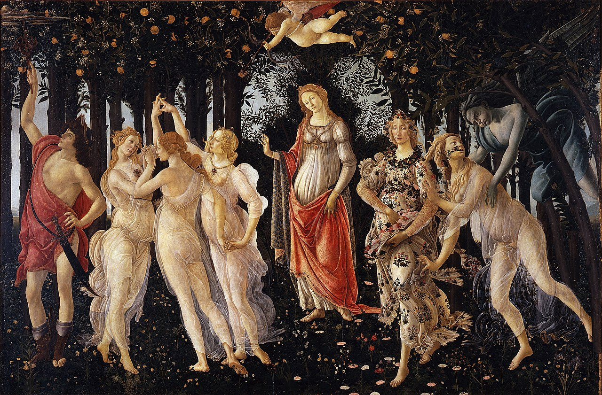

Autore: Sandro Botticelli
La Primavera è uno dei dipinti più celebri del Rinascimento italiano, realizzato da Sandro Botticelli intorno al 1480. Rappresenta un'allegoria della primavera, con figure mitologiche immerse in un rigoglioso giardino fiorito.
